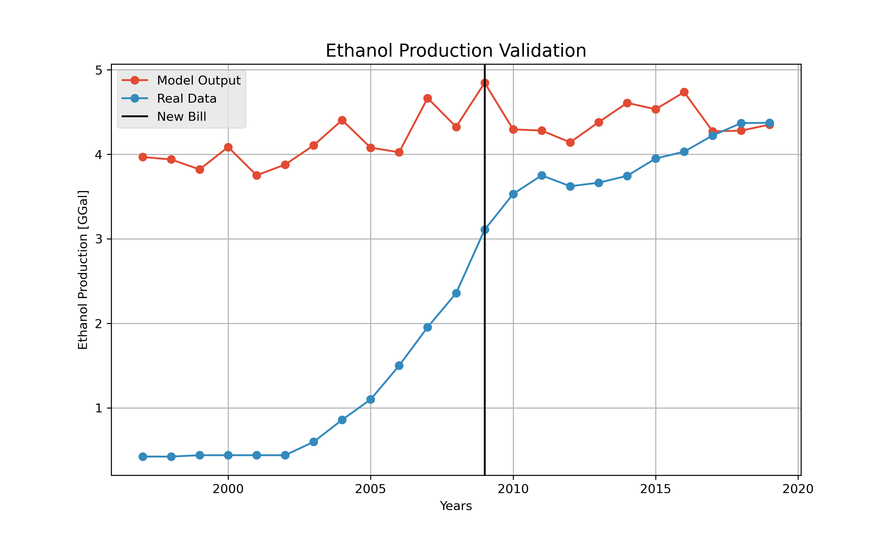

Visualization
Once you can run the model and generate the output, we have two scripts that post-process and analyze the output with visualizations. The tools are coded in Jupyter Notebook and were developed such that the code blocks must be executed in series. Additonal python packages required by the tools are listed at the top and can be found in counda-forge. Both tools load the output file from the model and make visualizations based on the output variables.
Plotting Tool
This tool generates the validation plot for the Energy subsystem using EIA data of ethanol produced in Iowa and compares it with the modelled production of Ethanol. Additionally, the tool also generates an interactive widget, which can plot the time series of variables outputted by the model for a specific county. The widget includes all 99 counties of Iowa and can plot all the modelled output variables. The function of the code blocks are explained below:
Imports the required packages
import os import numpy as np import pandas as pd from matplotlib import pyplot as plt import ipywidgets as widgetsRead the output file generated by the batch analysis script and defines the required widgets
# Load Result Data loc_R = 'Data_Output/Results.csv' df_result = pd.read_csv(loc_R) # Parse Result Data ns_data = df_result.iloc[:, 0] yc_data = df_result.iloc[:, 1] ys_data = df_result.iloc[:, 2] ep_data = df_result.iloc[:, 3] # Load Animal Agriculture Data loc_AA = 'Data_Input/animal_agriculture_data/IFEW_Counties_1997_2019.csv' df_AA = pd.read_csv(loc_AA) # Animal Agricultural dataframe # Parse Animal Agricultural Data yc_real = df_AA["CornGrainYield_bupacre"] ys_real = df_AA["SoybeansYield_bupacre"] years = pd.Series(range(1997, 2020)) # Load Energy Validation Data loc_NRG = 'Data_Validation/Iowa Historical Ethanol and Biodiesel Production EIA.csv' df_AA = pd.read_csv(loc_NRG) # Parse Energy Validation Data val_nrg_yr = df_AA["Year"] val_nrg_bd = df_AA["BDPRP"] * 42 / 1e6 # Thousand of Barrels to MGal val_nrg_ep = df_AA["ENPRP"] * 42 / 1e6 # Thousand of Barrels to MGal tot_ep = np.zeros(len(years)) # Define Dropdown Widget county_dropdown = widgets.Dropdown( options=[('Adair', 1), ('Adams', 2), ('Allamakee', 3), ('Appanoose', 4), ('Audubon', 5), ('Benton', 6), ('Black Hawk', 7), ('Boone', 8), ('Bremer', 9), ('Buchanan', 10), ('Buena Vista', 11), ('Butler', 12), ('Calhoun', 13), ('Carroll', 14), ('Cass', 15), ('Cedar', 16), ('Cerro Gordo', 17), ('Cherokee', 18), ('Chickasaw', 19), ('Clarke', 20), ('Clay', 21), ('Clayton', 22), ('Clinton', 23), ('Crawford', 24), ('Dallas', 25), ('Davis', 26), ('Decatur', 27), ('Delaware', 28), ('Des Moines', 29), ('Dickinson', 30), ('Dubuque', 31), ('Emmet', 32), ('Fayette', 33), ('Floyd', 34), ('Franklin', 35), ('Fremont', 36), ('Greene', 37), ('Grundy', 38), ('Guthrie', 39), ('Hamilton', 40), ('Hancock', 41), ('Hardin', 42), ('Harrison', 43), ('Henry', 44), ('Howard', 45), ('Humboldt', 46), ('Ida', 47), ('Iowa', 48), ('Jackson', 49), ('Jasper', 50), ('Jefferson', 51), ('Johnson', 52), ('Jones', 53), ('Keokuk', 54), ('Kossuth', 55), ('Lee', 56), ('Linn', 57), ('Louisa', 58), ('Lucas', 59), ('Lyon', 60), ('Madison', 61), ('Mahaska', 62), ('Marion', 63), ('Marshall', 64), ('Mills', 65), ('Mitchell', 66), ('Monona', 67), ('Monroe', 68), ('Montgomery', 69), ('Muscatine', 70), ('Obrien', 71), ('Osceola', 72), ('Page', 73), ('Palo Alto', 74), ('Plymouth', 75), ('Pocahontas', 76), ('Polk', 77), ('Pottawattamie', 78), ('Poweshiek', 79), ('Ringgold', 80), ('Sac', 81), ('Scott', 82), ('Shelby', 83), ('Sioux', 84), ('Story', 85), ('Tama', 86), ('Taylor', 87), ('Union', 88), ('Van Buren', 89), ('Wapello', 90), ('Warren', 91), ('Washington', 92), ('Wayne', 93), ('Webster', 94), ('Winnebago', 95), ('Winneshiek', 96), ('Woodbury', 97), ('Worth', 98), ('Wright', 99)], description='County:', disabled = False)Generates the validation plot for Ethanol
# Creates Directory if not os.path.exists("Figures"): os.mkdir("Figures") if not os.path.exists("Figures/Validation"): os.mkdir("Figures/Validation") for year in years: i = year - 1997 values = ep_data.iloc[range(i, len(ep_data), 23)] tot_ep[i] = np.sum(values) / 1e9 # Convert to MGal fig0, ax0 = plt.subplots(figsize=(10,6)) plt.style.use('ggplot') ax0.plot(years, tot_ep, "C0o-") ax0.plot(val_nrg_yr.iloc[range(val_nrg_yr[val_nrg_yr == 1997].index.values[0], val_nrg_yr[val_nrg_yr == 2020].index.values[0])], val_nrg_ep.iloc[range(val_nrg_yr[val_nrg_yr == 1997].index.values[0], val_nrg_yr[val_nrg_yr == 2020].index.values[0])], "C1o-") ax0.axvline(x = 2009, color = "black") # Plot Labels ax0.set_title("Ethanol Production Validation") ax0.set_xlabel("Years") ax0.set_ylabel("Ethanol Production [GGal]") ax0.legend(["Model Output", "Real Data", "New Bill"], loc ="best") ax0.grid(True)Save the plot if desired
fig_name = "Figures/Validation/Ethanol Production.png" fig0.savefig(fig_name, dpi = 300)Define a function to generate the desired plot based on the inputs of the widget
def plot_function(county_no): fig1 = plt.figure(figsize =(10, 5)) plt.style.use('ggplot') # Model Outputs plt.plot(years, ns_data.iloc[(county_no - 1) * 23 : 23 + (county_no - 1) * 23], 'C0o') # # Regression Line - Polyfit # rl_coeffs = np.polyfit(years, ns_data.iloc[(county_no - 1) * 23 : 23 + (county_no - 1) * 23], 3) # rl_eq = np.poly1d(rl_coeffs) # rl_x = np.linspace(1997, 2019, 100) # rl_y = rl_eq(rl_x) # plt.plot(rl_x, rl_y, 'C1.-') # Plot Labels plt.title("Modelled Nitrogen Surplus Trend") plt.xlabel("Years") plt.ylabel("Nitrogen Surplus (kg/ha)") # plt.legend(["Model Output", "Regression Fit"], loc ="best") plt.grid(True) plt.show() fig2 = plt.figure(figsize =(10, 5)) plt.style.use('ggplot') # Model Outputs plt.plot(years, yc_data.iloc[(county_no - 1) * 23 : 23 + (county_no - 1) * 23], 'C0.-') # Real Data plt.plot(years, yc_real.iloc[(county_no - 1) * 23 : 23 + (county_no - 1) * 23], 'C1.-') # Plot Labels plt.title("Modelled Corn Yield Trend") plt.xlabel("Years") plt.ylabel("Corn Yield (bu/acre)") plt.legend(["Model Output", "Real Data"], loc ="best") plt.grid(True) plt.show() fig3 = plt.figure(figsize =(10, 5)) plt.style.use('ggplot') # Scatter - Model Outputs plt.plot(years, ys_data.iloc[(county_no - 1) * 23 : 23 + (county_no - 1) * 23], 'C0.-') # Real Data plt.plot(years, ys_real.iloc[(county_no - 1) * 23 : 23 + (county_no - 1) * 23], 'C1.-') # Plot Labels plt.title("Modelled Soybean Yield Trend") plt.xlabel("Years") plt.ylabel("Soybean Yield (bu/acre)") plt.legend(["Model Output", "Real Data"], loc ="best") plt.grid(True) plt.show()Generates the interactive widget
widgets.interact(plot_function, county_no = county_dropdown)
The ethanol validation plot with the modelled ethanol production and EIA data is shown below:
{kind=link}
Choropleth Map Tool
This tool generates choropleth maps, which is a type of statistical thematic map that uses pseudocolor to visualize the modelled data geographically. The plot is made by an interactive widgets with inputs for the desired year and can plot all the output variables. Additionally, the tool can also save the maps for all variables as a set of images to generate a time series GIF.
Imports the required packages
import os import numpy as np import pandas as pd from matplotlib import pyplot as plt import ipywidgets as widgetsReads the output file generated by the batch analysis script and defines the required widgets
# Load Result Data loc_R = 'Data_Output/Results.csv' df_result = pd.read_csv(loc_R) # Parse Result Data ns_data = df_result.iloc[:, 0] yc_data = df_result.iloc[:, 1] ys_data = df_result.iloc[:, 2] ep_data = df_result.iloc[:, 3] # Load Animal Agriculture Data loc_AA = 'Data_Input/animal_agriculture_data/IFEW_Counties_1997_2019.csv' df_AA = pd.read_csv(loc_AA) # Animal Agricultural dataframe # Parse Animal Agricultural Data yc_real = df_AA["CornGrainYield_bupacre"] ys_real = df_AA["SoybeansYield_bupacre"] years = pd.Series(range(1997, 2020)) # Load Energy Validation Data loc_NRG = 'Data_Validation/Iowa Historical Ethanol and Biodiesel Production EIA.csv' df_AA = pd.read_csv(loc_NRG) # Parse Energy Validation Data val_nrg_yr = df_AA["Year"] val_nrg_bd = df_AA["BDPRP"] * 42 / 1e6 # Thousand of Barrels to MGal val_nrg_ep = df_AA["ENPRP"] * 42 / 1e6 # Thousand of Barrels to MGal tot_ep = np.zeros(len(years)) # Define Dropdown Widget county_dropdown = widgets.Dropdown( options=[('Adair', 1), ('Adams', 2), ('Allamakee', 3), ('Appanoose', 4), ('Audubon', 5), ('Benton', 6), ('Black Hawk', 7), ('Boone', 8), ('Bremer', 9), ('Buchanan', 10), ('Buena Vista', 11), ('Butler', 12), ('Calhoun', 13), ('Carroll', 14), ('Cass', 15), ('Cedar', 16), ('Cerro Gordo', 17), ('Cherokee', 18), ('Chickasaw', 19), ('Clarke', 20), ('Clay', 21), ('Clayton', 22), ('Clinton', 23), ('Crawford', 24), ('Dallas', 25), ('Davis', 26), ('Decatur', 27), ('Delaware', 28), ('Des Moines', 29), ('Dickinson', 30), ('Dubuque', 31), ('Emmet', 32), ('Fayette', 33), ('Floyd', 34), ('Franklin', 35), ('Fremont', 36), ('Greene', 37), ('Grundy', 38), ('Guthrie', 39), ('Hamilton', 40), ('Hancock', 41), ('Hardin', 42), ('Harrison', 43), ('Henry', 44), ('Howard', 45), ('Humboldt', 46), ('Ida', 47), ('Iowa', 48), ('Jackson', 49), ('Jasper', 50), ('Jefferson', 51), ('Johnson', 52), ('Jones', 53), ('Keokuk', 54), ('Kossuth', 55), ('Lee', 56), ('Linn', 57), ('Louisa', 58), ('Lucas', 59), ('Lyon', 60), ('Madison', 61), ('Mahaska', 62), ('Marion', 63), ('Marshall', 64), ('Mills', 65), ('Mitchell', 66), ('Monona', 67), ('Monroe', 68), ('Montgomery', 69), ('Muscatine', 70), ('Obrien', 71), ('Osceola', 72), ('Page', 73), ('Palo Alto', 74), ('Plymouth', 75), ('Pocahontas', 76), ('Polk', 77), ('Pottawattamie', 78), ('Poweshiek', 79), ('Ringgold', 80), ('Sac', 81), ('Scott', 82), ('Shelby', 83), ('Sioux', 84), ('Story', 85), ('Tama', 86), ('Taylor', 87), ('Union', 88), ('Van Buren', 89), ('Wapello', 90), ('Warren', 91), ('Washington', 92), ('Wayne', 93), ('Webster', 94), ('Winnebago', 95), ('Winneshiek', 96), ('Woodbury', 97), ('Worth', 98), ('Wright', 99)], description='County:', disabled = False)Defines a function to generate the desired choropleth map based on the inputs of the widget
def plot_function(output_no, year): year = year - 1997 if output_no == 1: values = ns_data.iloc[range(year, len(ns_data), 23)] lower_bound = min(ns_data) upper_bound = max(ns_data) var_name = "Nitrogen Surplus" unit_name = "[kg/ha]" elif output_no == 2: values = yc_data.iloc[range(year, len(yc_data), 23)] lower_bound = min(yc_data) upper_bound = max(yc_data) var_name = "Corn Yield" unit_name = "[bu/acre]" elif output_no == 3: values = ys_data.iloc[range(year, len(ys_data), 23)] lower_bound = min(ys_data) upper_bound = max(ys_data) var_name = "Soybean Yield" unit_name = "[bu/acre]" elif output_no == 4: values = ep_data.iloc[range(year, len(ep_data), 23)] / 1e6 # Convert to Millions of Gals lower_bound = min(ep_data) / 1e6 upper_bound = max(ep_data) / 1e6 var_name = "Ethanol Production" unit_name = "[Mgal]" df = pd.concat([fips, values], axis = 1) fig = px.choropleth(df, geojson = counties, locations = fips, color = values, color_continuous_scale = "Turbo", # color_continuous_scale = "Viridis", range_color = (lower_bound, upper_bound), scope = "usa", title = '{} in Iowa ({})'.format(var_name, str(year + 1997))) fig.update_layout(margin = {"r":0,"t":10,"l":0,"b":0}, title_x = 0.45, title_y = 0.97, coloraxis_colorbar = dict( title = unit_name, y = 0.5, x = 1)) fig.update_geos(fitbounds = "locations") return figGenerates the interactive widget
# Interactive Visualization widgets.interact(plot_function, year = year_slider, output_no = output_dropdown)Creates directories to save images
# Creates Directory if not os.path.exists("Figures"): os.mkdir("Figures") if not os.path.exists("Figures/Nitrogen Surplus"): os.mkdir("Figures/Nitrogen Surplus") if not os.path.exists("Figures/Corn Yield"): os.mkdir("Figures/Corn Yield") if not os.path.exists("Figures/Soybean Yield"): os.mkdir("Figures/Soybean Yield") if not os.path.exists("Figures/Ethanol Production"): os.mkdir("Figures/Ethanol Production")Saves static images of all the maps created by the tool
# Code to Save All Figures for output_no in range(1, 5): for year in range(1997, 2020): year = year - 1997 bins = 20j if output_no == 1: values = ns_data.iloc[range(year, len(ns_data), 23)] lower_bound = min(ns_data) upper_bound = max(ns_data) var_name = "Nitrogen Surplus" unit_name = "[kg/ha]" elif output_no == 2: values = yc_data.iloc[range(year, len(yc_data), 23)] lower_bound = min(yc_data) upper_bound = max(yc_data) var_name = "Corn Yield" unit_name = "[bu/acre]" elif output_no == 3: values = ys_data.iloc[range(year, len(ys_data), 23)] lower_bound = min(ys_data) upper_bound = max(ys_data) var_name = "Soybean Yield" unit_name = "[bu/acre]" elif output_no == 4: values = ep_data.iloc[range(year, len(ep_data), 23)] / 1e6 # Convert to Millions of Gals lower_bound = min(ep_data) / 1e6 upper_bound = max(ep_data) / 1e6 var_name = "Ethanol Production" unit_name = "[Mgal]" df = pd.concat([fips, values], axis = 1) fig = px.choropleth(df, geojson = counties, locations = fips, color = values, color_continuous_scale = "Turbo", # color_continuous_scale = "Viridis", range_color = (lower_bound, upper_bound), width = 900, height = 450, scope = "usa", title = '{} in Iowa ({})'.format(var_name, str(year + 1997))) fig.update_layout(margin = {"r":0,"t":25,"l":5,"b":5}, title_x = 0.45, title_y = 0.98, coloraxis_colorbar = dict(title = unit_name)) fig.update_geos(fitbounds = "locations") fig_name = "Figures/{}/{} - {}.png".format(var_name, var_name, str(year + 1997)) fig.write_image(fig_name, scale = 5) print("\nAll figures have been saved!!!\n")From the static images generated by the tool, GIFs were created and are shown below:
Nitrogen Surplus:

Ethanol Production:

Corn Yield:

Soybean Yield: